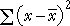

Simple measures of spread
These are (relatively) easy to understand and explain to others, but neither are commonly used.
Standard deviation
The standard deviation is a 'typical' distance of values from the sample mean.
The standard deviation is denoted by the letter s and is defined by:

The numerator, , depends on the distances of the values to the mean, so it will be small if the values are all close to the mean and big if they are far from the mean.
Variance
The square of the standard deviation, s2, is called the sample variance. Variances are sometimes reported and used but standard deviations are easier to interpret since they have the same units as the original data (e.g. kilograms or dollars).